Six magnets per link
The primary version is configured with six magnets inside each bracelet link.
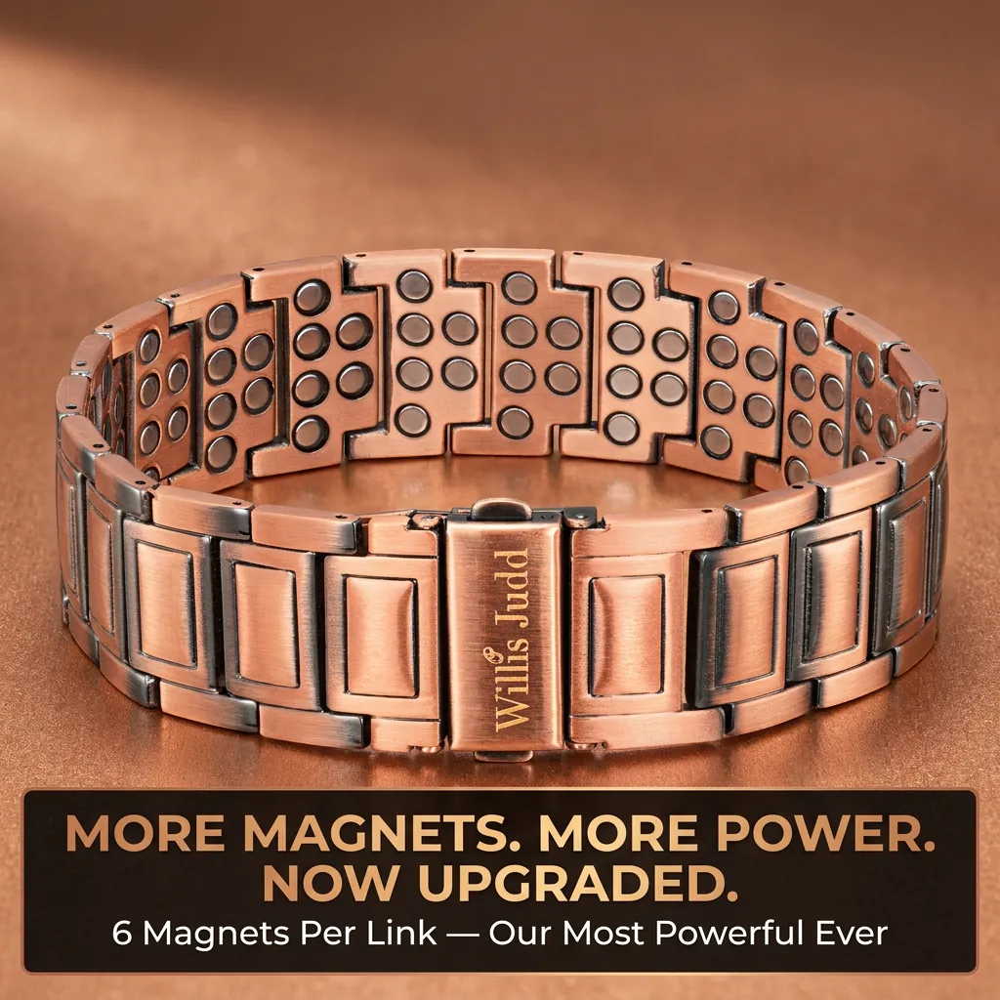
22 mm · adjustable fitWillis Judd
6 magnets per link
★★★★★ 4.5 · 1,029 reviewsFree shipping over $75 · 90-day returns · Secure checkout
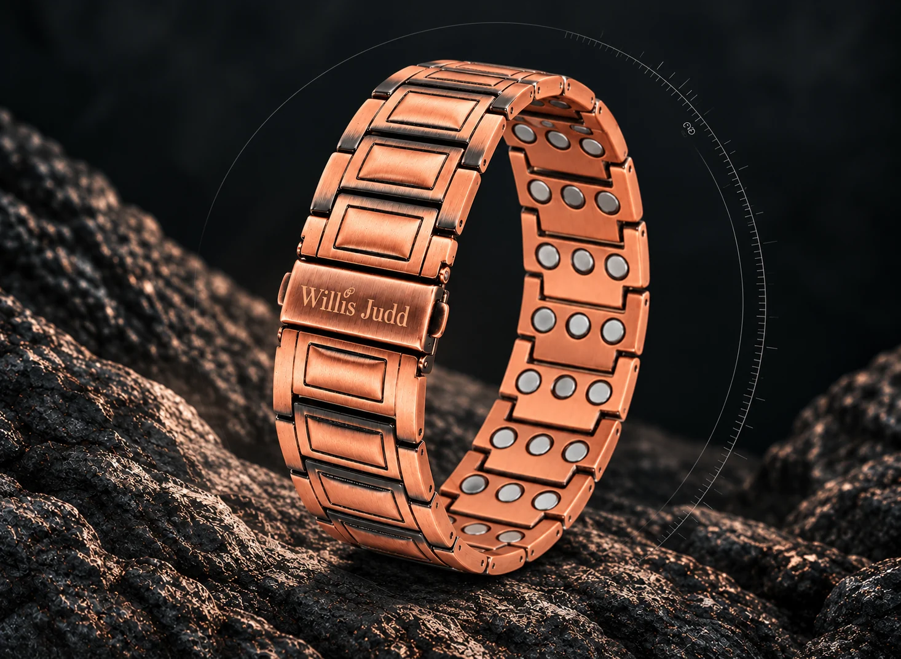
Willis Judd
— 6 Magnets Per Link
4.5(1,029 reviews)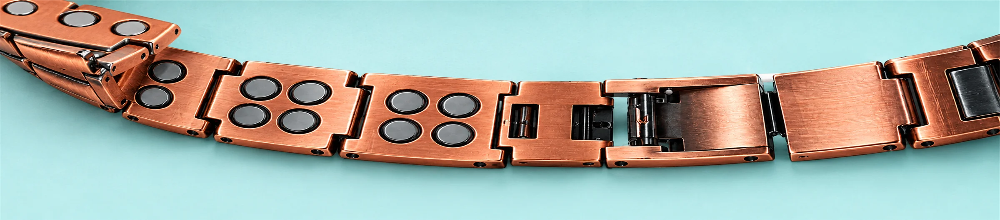
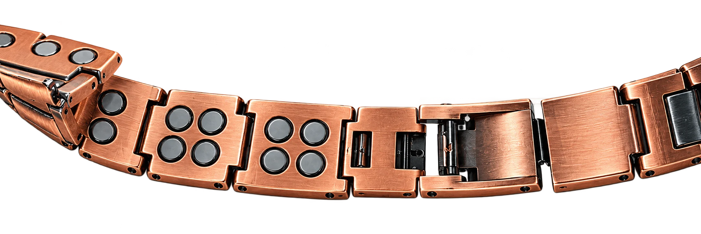
A closer look
Built to be inspected
The upgraded bracelet pairs an extra-wide 22 mm profile with a link-by-link magnetic interior and an adjustable clasp. Every detail is presented clearly, without making unsupported health promises.
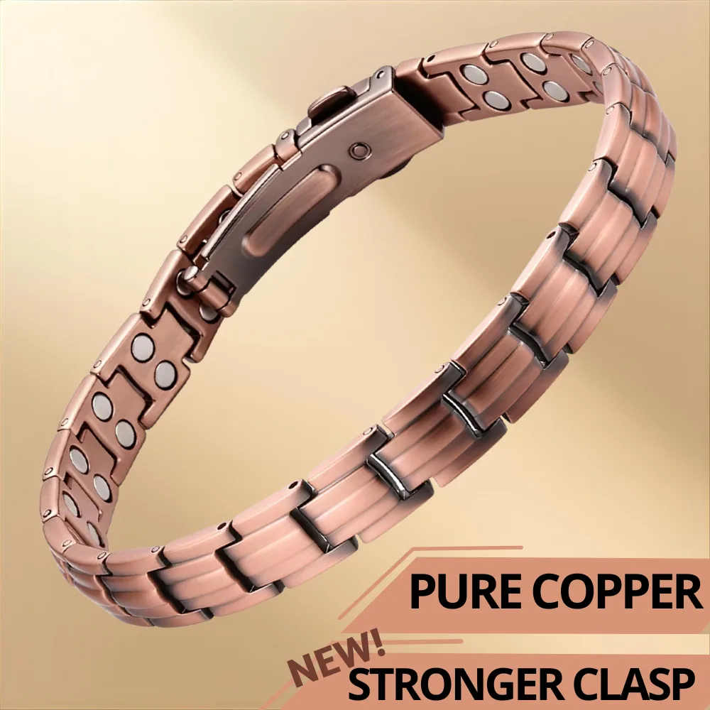
The primary version is configured with six magnets inside each bracelet link.
At 22 mm wide, this design has a more substantial presence than a standard slim bracelet.
Remove links with the included tool and spare pins to personalize the fit.
See it in motion
The original product video is contained in a responsive frame and loads only when needed, avoiding the oversized mobile treatment on the current page.
Compare both styles ↘Choose your configuration
Upgraded
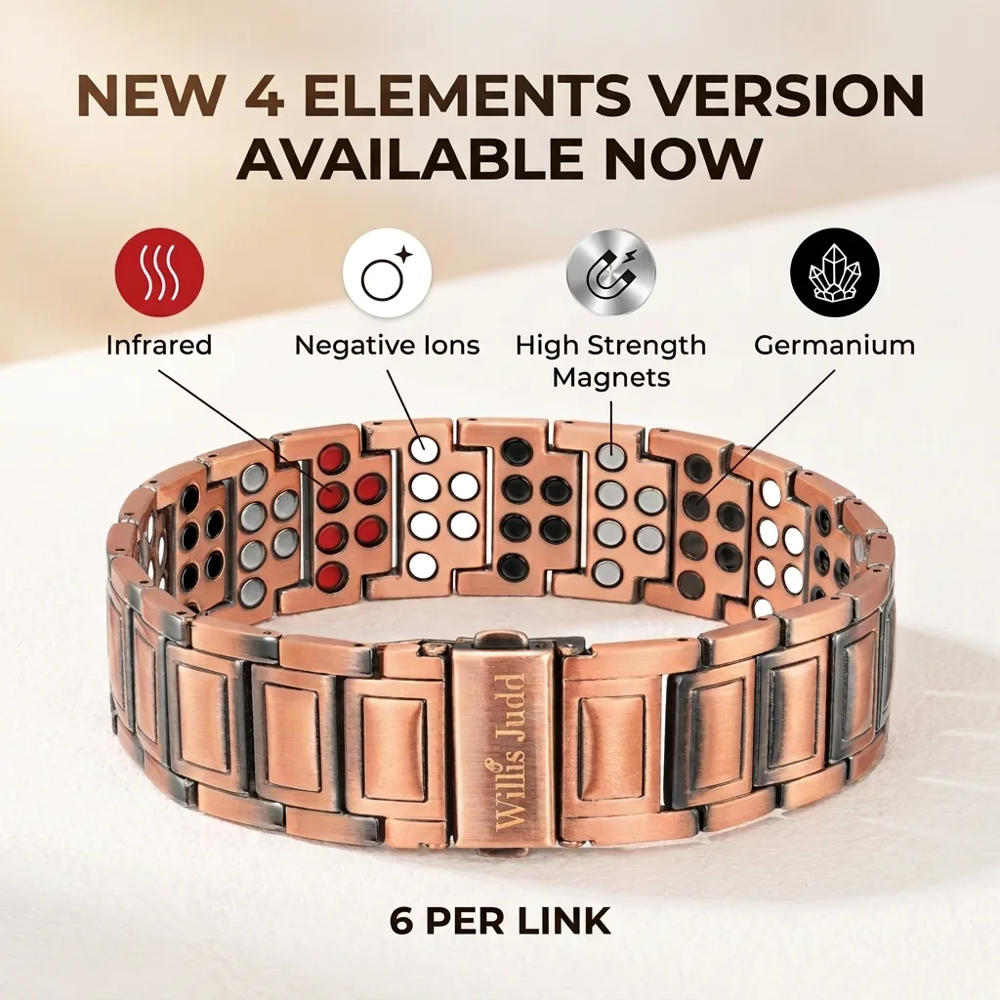
New configuration
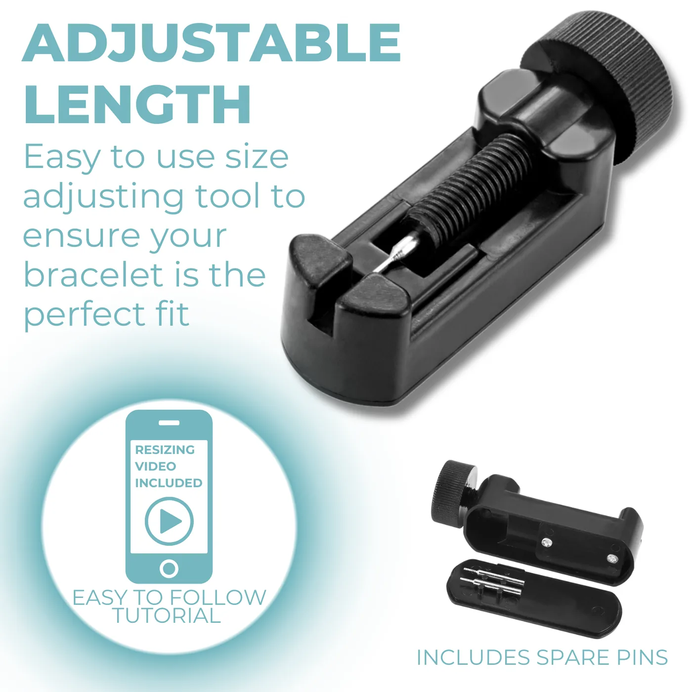
Sized by you
The supplied tool supports at-home link removal, while spare pins are included in the kit.
Check where the bracelet sits comfortably around your wrist.
Use the included tool to push out pins one link at a time.
Reconnect the bracelet and confirm the clasp closes cleanly.
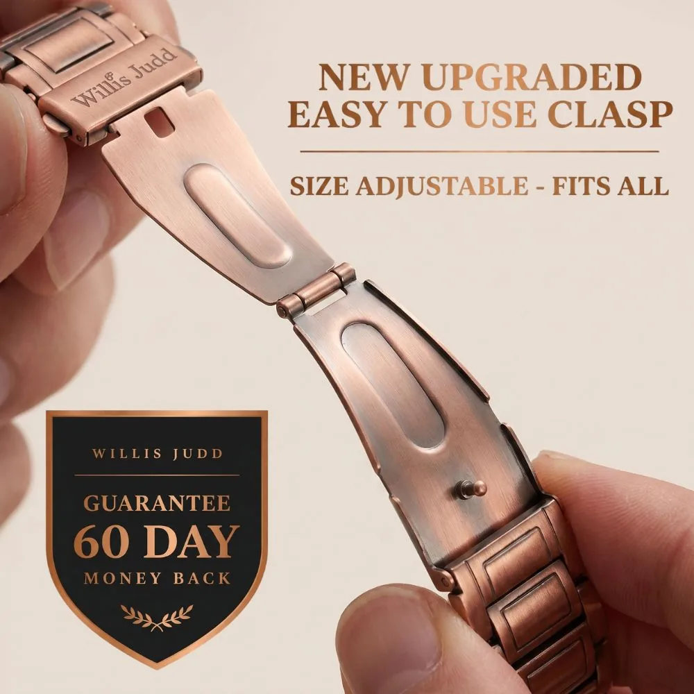
Close-up detail
The clasp and link system are shown at large scale so shoppers can understand the physical product before ordering.
Read sizing questions ↘Source-page rating
Reported on the captured product page.
Customer photographs from the source review feed are shown below. No review quotations have been invented for this mockup.
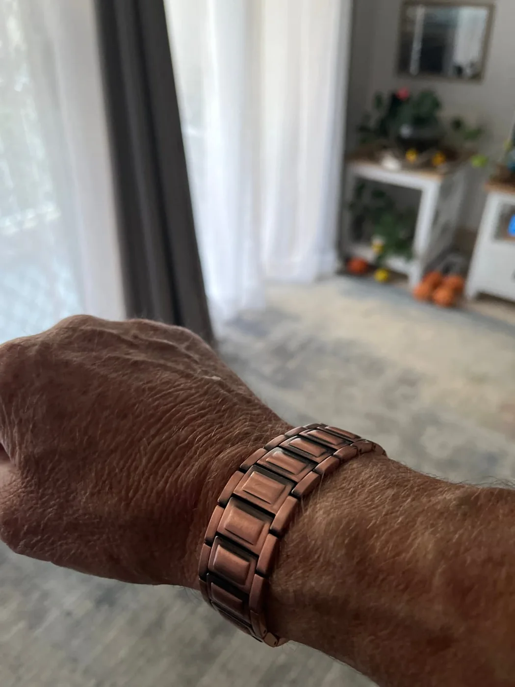
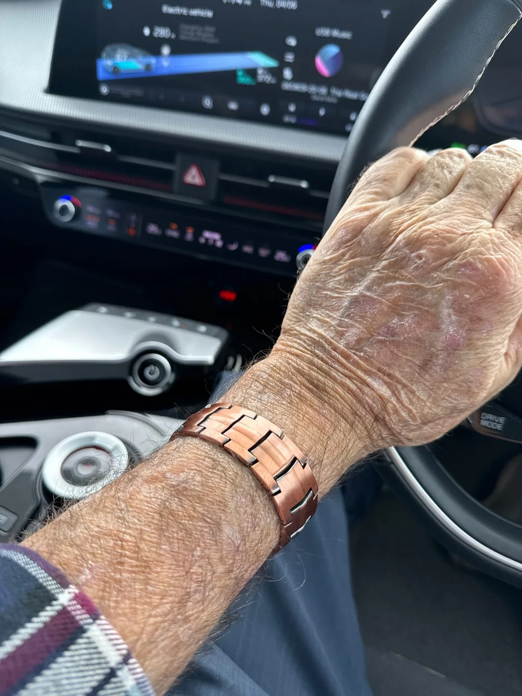
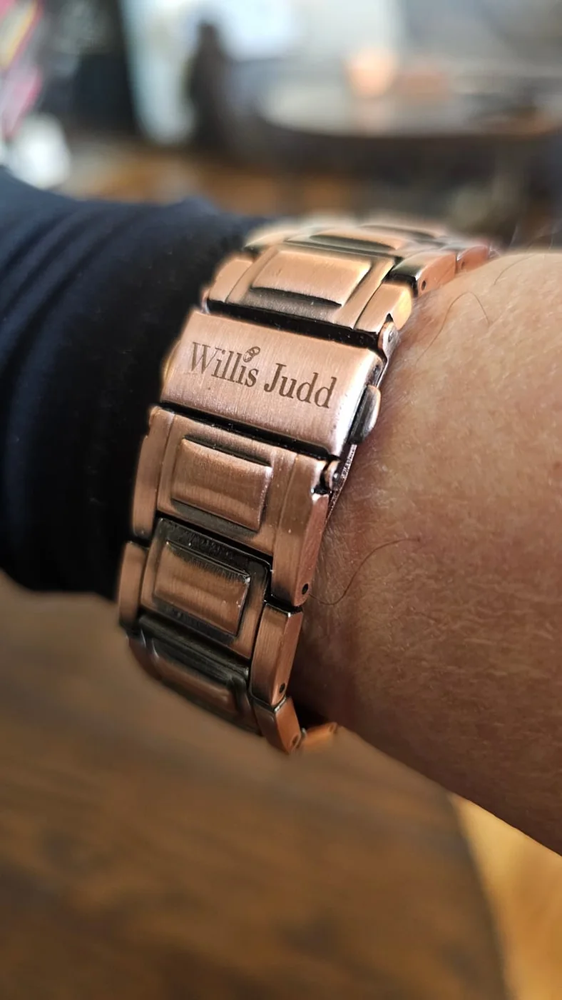
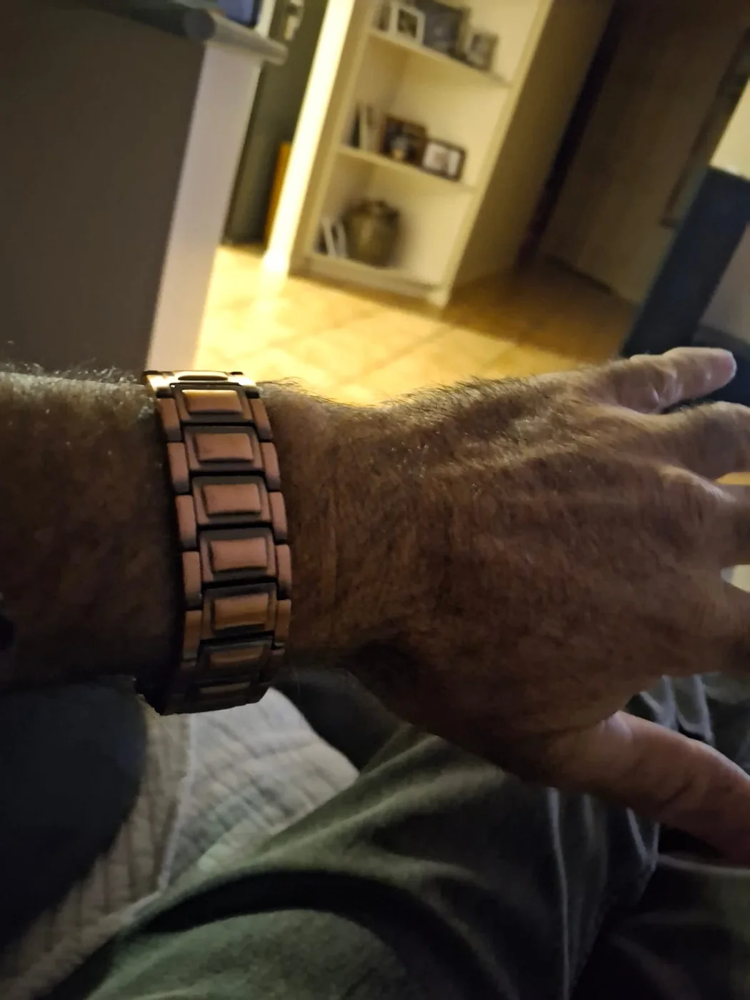
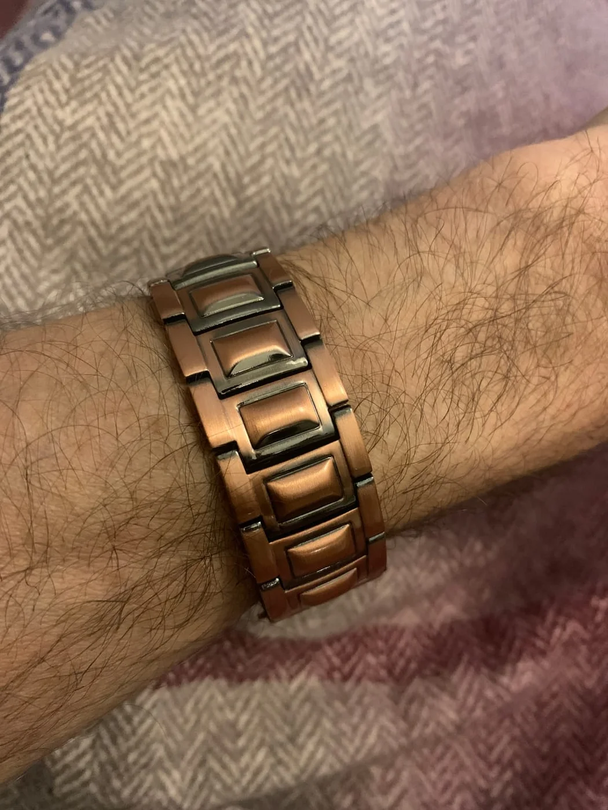
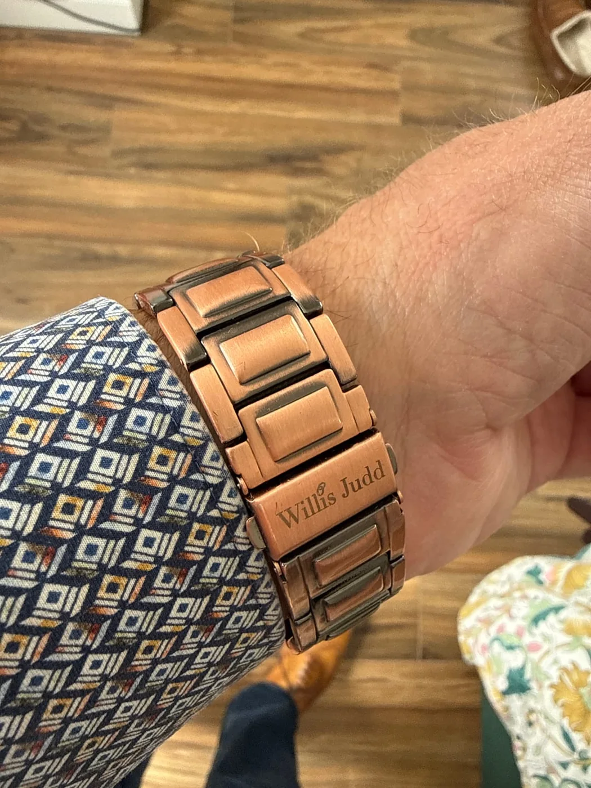
Health & safety
This product contains magnets. It is not recommended for people with a pacemaker, implanted cardiac device, insulin pump, or for those who are pregnant. If you are unsure, consult your doctor before use.
Product questions
The source product description lists the bracelet at 22 mm wide.
The primary upgraded option is listed as six magnets per link. The second option is titled “NEW - 6 Per Link - 4 Elements.”
Yes. The product imagery and description show an included sizing tool and spare pins for removing links at home.
The bracelet, sizing tool, spare pins, and Willis Judd presentation packaging are shown or described in the captured product content.
Do not wear this product if you have a pacemaker, implanted cardiac device, or insulin pump, or if you are pregnant. Speak with a doctor if you are uncertain.
Willis Judd